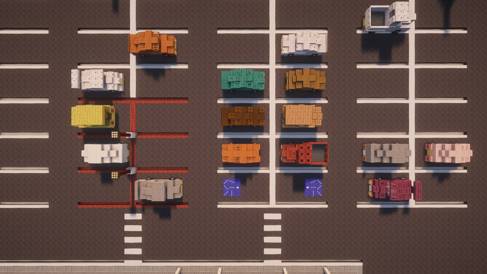
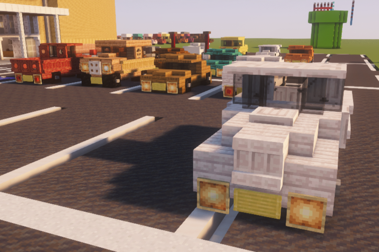
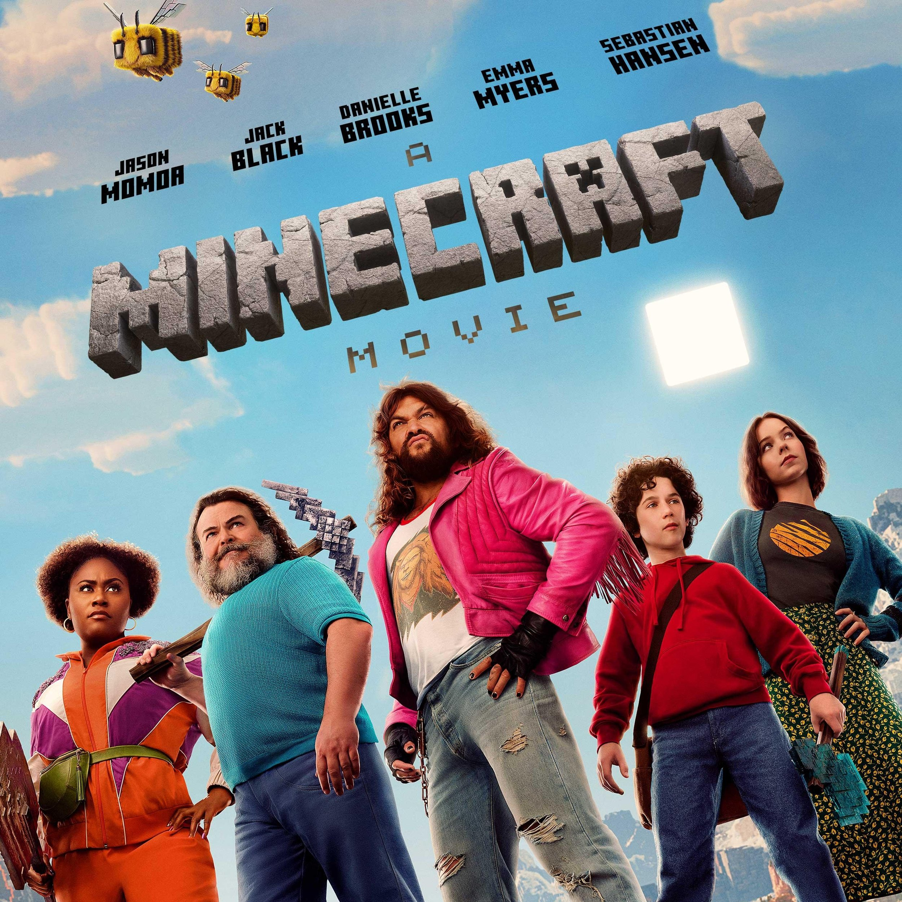
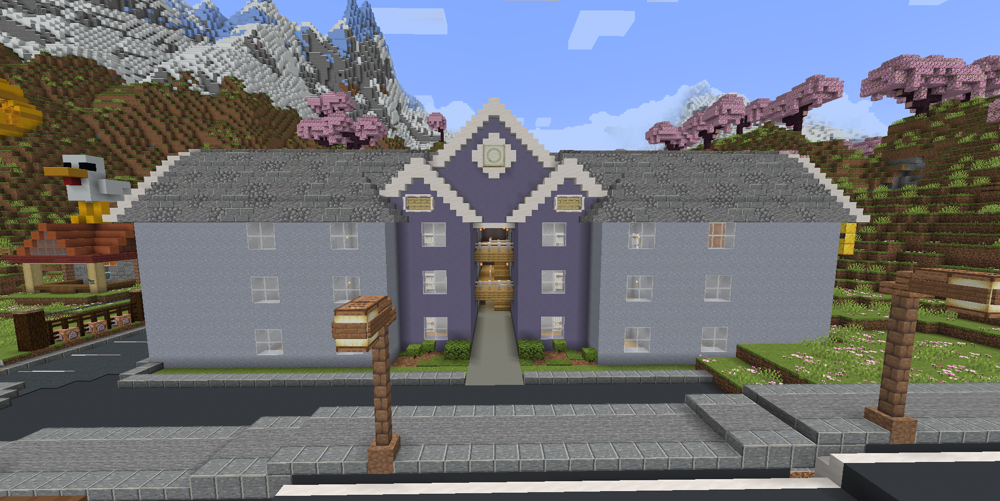
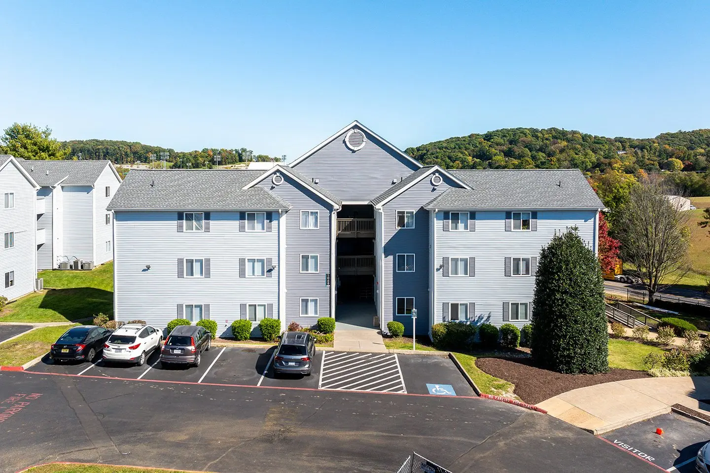

Minecraft
Minecraft AI Project
Me vs. BlockGPT


For one of my CS classes I had to do a project related to AI without coding. Minecraft is one of my passions, so I looked into anything that had to do with Minecraft and AI. I found BlockGPT, an LLM that turns your prompt into a schematic that you can paste in Minecraft. The main purpose of my project was to compare my own builds to the builds created by BlockGPT. I'm a huge fan of Maroon 5, so I made the song Animals in note block form.
My project presentation: Canva presentation
Minecraft Note Block Song
JMU Fight Song
As a fun side project, I recreated the JMU Fight Song using note blocks in Minecraft! I decided to do this project because I love music and this game. I listened to the song hundreds of times, figuring out the notes and rhythms by ear. I also got to use redstone, which reminded me of concepts in computer science and circuits.
Minecraft Note Block Song
Steve's Lava Chicken

I also built the “Steve's Lava Chicken” song in Minecraft using note blocks. This project was just something I did in my free time. I really liked figuring out how to make the rhythms sound right in the game. It was a challenge, but my experience with music made it really fun.
Minecraft Build
The Hills Southview


I built The Hills Southview, an apartment complex in Harrisonburg, inside Minecraft! I love building real-life places in the game. This was one of the larger builds I've created, and I'm really proud of how it turned out. I even created my own room inside the apartment to make it feel more like real life. I also used plugins that allowed me to control every part of armor stands, which let me add a lot of details like my electronic drumkit.